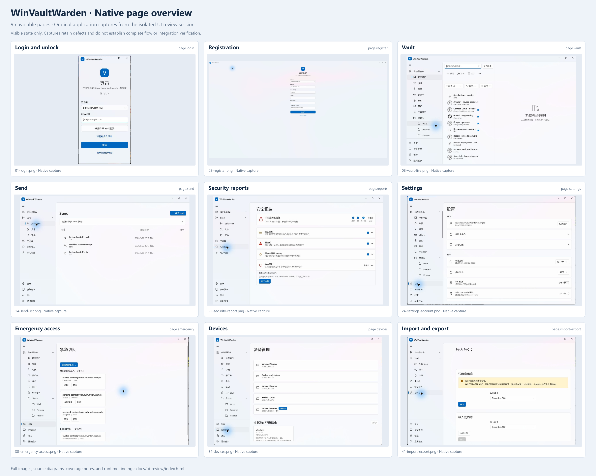
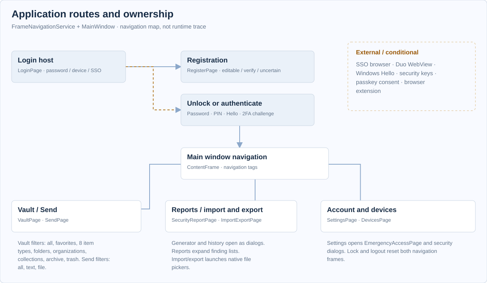

Evidence and interface inventory
Review the whole
application surface.
Native Windows captures sit alongside source-derived diagrams, so reviewers can inspect the visible application and track every documented page, dialog, and conditional state.
9 navigable pages, expanded into 178 review surfaces. The inventory also includes dialog variants, embedded editors, state families, reusable controls, and developer harnesses; it is not a count of independent pages. Blue marks identify native screenshots. Amber marks identify logical source diagrams with English labels and summarized layouts. A diagram does not establish that a state was opened, rendered correctly, or passed integration testing.
Capture evidence is not a test pass. “Observed UI” identifies a real native capture; manifest kind “live” does not mean an end-to-end flow was validated. Scope notes retain clipped controls, empty panels, missing field rendering, and other defects. Related inventory links are context only and do not increase capture coverage. See runtime findings, session / reproduction notes, and backend / fixture setup.
See the nine native pages.
One original capture per navigable page. The atlas below retains the full session evidence and state diagrams.


Find the route.
The two navigation frames separate authentication from the unlocked application.


Inspect the interface.
Open a card for the full image, source reference, entry point, and evidence details.
Showing 231 visual records in 13 areas.
Authentication
34 records


Vault and item management
71 records


Engineering collection is selected and a shared login is shown. The organization sidebar entry is visible but not selected, so this capture does not cover the organization-filter view. Login username/URI values are blank, password row absent, and TOTP placeholder remains; notes and no-attachment state are visible.


Send
10 records


Generator
9 records


Security reports
2 recordsHealth summary shows one reused-password finding, three weak-password findings, and one insecure-website finding. Those result expanders are collapsed. Exposed-password section is expanded in the not-checked state; no exposure result is shown.


Import and export
4 records


Devices
5 records


Emergency access
11 records


Settings and account security
58 records


Lower Security and Preferences show PIN off, Windows Hello unavailable, two-factor and Emergency Access entry points, a 30-second clipboard timeout, and disabled minimize-after-copy. Tray-icon toggle is at the bottom; child controls are outside this viewport.


External and system flows
11 records


Browser development harnesses
5 records


Account for every surface.
One row per inventory entry. Capture links indicate representative visible evidence, subject to each scope note. Related links are contextual, not capture coverage. All entries have logical diagrams.
| ID | Surface | Entry / state | Evidence available |
|---|---|---|---|
| shell.main | Main navigation shell Shell and navigation · shell | Successful login or Debug demo vault | Capture + diagram |
| page.vault | My vault Vault and item management · page | vault:allitems | Capture + diagram |
| page.send | Send Send · page | send:all | send:text | send:file | Capture + diagram |
| page.reports | Security reports Security reports · page | reports | Capture + diagram |
| page.import-export | Import and export Import and export · page | io | Capture + diagram |
| page.devices | Device management Devices · page | devices | Capture + diagram |
| page.emergency | Emergency access Emergency access · page | Settings > Emergency access | Capture + diagram |
| page.placeholder | Generic unfinished-feature placeholder Shell and navigation · unreachable | No current navigation route | Diagram only |
| vault.favorites | Favorites Vault and item management · view | vault:favorites | Diagram only |
| vault.folders | Folders Vault and item management · view | vault:folder:<id> | Capture + diagram |
| vault.organizations | Organizations Vault and item management · view | vault:organization:<id> | Diagram only Context only: Related capture 1 |
| vault.collections | Collections Vault and item management · view | vault:collection:<id> | Capture + diagram |
| vault.archive | Archive Vault and item management · view | vault:archive | Capture + diagram |
| vault.trash | Recycle bin Vault and item management · view | vault:trash | Diagram only |
| vault.empty | Empty vault Vault and item management · state | Account with no active items | Diagram only |
| vault.no-results | No matching items Vault and item management · state | Search for a nonmatching value or combine incompatible filters | Capture + diagram |
| vault.no-selection | No item selected Vault and item management · state | Open vault before selecting an item | Capture + diagram |
| vault.selection | Batch selection Vault and item management · state | Vault > Select > choose items | Capture + diagram |
| vault.pending-create | Pending item-creation reconciliation Vault and item management · state | Create response interrupted or successful creation cannot be located | Diagram only |
| vault.item-warning | Vault operation and decryption warnings Vault and item management · state | Offline unlock, partial sync, or failed mutation | Diagram only |
| vault.detail.login | Login details Vault and item management · detail | vault:type:Login > item | Capture + diagram |
| vault.editor.login | Create or edit login Vault and item management · editor | Vault > Add > Login; or item > Edit | Diagram only Context only: Related capture 1 |
| vault.detail.card | Payment card details Vault and item management · detail | vault:type:Card > item | Capture + diagram |
| vault.editor.card | Create or edit payment card Vault and item management · editor | Vault > Add > Payment card; or item > Edit | Diagram only |
| vault.detail.identity | Identity details Vault and item management · detail | vault:type:Identity > item | Capture + diagram |
| vault.editor.identity | Create or edit identity Vault and item management · editor | Vault > Add > Identity; or item > Edit | Diagram only |
| vault.detail.note | Secure note details Vault and item management · detail | vault:type:Note > item | Capture + diagram |
| vault.editor.note | Create or edit secure note Vault and item management · editor | Vault > Add > Secure note; or item > Edit | Diagram only |
| vault.detail.ssh | SSH key details Vault and item management · detail | vault:type:Ssh > item | Capture + diagram |
| vault.editor.ssh | Create or edit ssh key Vault and item management · editor | Vault > Add > SSH key; or item > Edit | Diagram only |
| vault.detail.bank | Bank account details Vault and item management · detail | vault:type:BankAccount > item | Diagram only |
| vault.editor.bank | Create or edit bank account Vault and item management · editor | Vault > Add > Bank account; or item > Edit | Diagram only |
| vault.detail.license | Driver's license details Vault and item management · detail | vault:type:DriversLicense > item | Diagram only |
| vault.editor.license | Create or edit driver's license Vault and item management · editor | Vault > Add > Driver's license; or item > Edit | Diagram only |
| vault.detail.passport | Passport details Vault and item management · detail | vault:type:Passport > item | Diagram only |
| vault.editor.passport | Create or edit passport Vault and item management · editor | Vault > Add > Passport; or item > Edit | Diagram only |
| vault.editor.options | Editor destination and extra fields Vault and item management · state | Any item editor > common fields / extra options | Diagram only |
| vault.login.passkeys | Stored passkey information Vault and item management · state | Login item containing passkeys | Diagram only |
| vault.login.history | Password history Vault and item management · state | Login details > expand password history | Diagram only Context only: Related capture 1 · Related capture 2 |
| vault.attachments | Attachments Vault and item management · state | Item detail > attachments section | Capture + diagram |
| vault.add-menu | Add item menu Vault and item management · flyout | Vault > Add | Diagram only |
| vault.filter-menu | Vault refinement filters Vault and item management · flyout | Vault > Filter | Capture + diagram |
| vault.sort-menu | Vault sort choices Vault and item management · flyout | Vault > sort ComboBox | Diagram only |
| vault.saved-views-menu | Saved views Vault and item management · flyout | Vault > Views | Capture + diagram |
| vault.row-menu | Vault row actions Vault and item management · flyout | Hover/focus item > More | Diagram only |
| vault.move-menu | Move selected items to folder Vault and item management · flyout | Select items > Move | Diagram only |
| vault.reprompt | Verify master password Vault and item management · dialog | Protected item reveal/copy/open/edit or unlock-sensitive-fields action | Capture + diagram |
| vault.transfer | Transfer to organization Vault and item management · dialog | Personal item > Transfer to organization | Diagram only |
| vault.collection-select | Manage item collections Vault and item management · dialog | Organization item > Manage collections; selection > Add/remove collection | Capture + diagram |
| vault.folder-create | New folder Vault and item management · dialog | Vault > Add > New folder | Diagram only |
| vault.folder-rename | Rename folder Vault and item management · dialog | Select folder > Rename folder | Diagram only |
| vault.saved-view-create | Save current view Vault and item management · dialog | Vault > Views > Save current view | Diagram only |
| vault.trash-confirm | Move item to recycle bin Vault and item management · dialog | Item detail or row menu > Delete | Diagram only |
| vault.delete-confirm | Permanently delete item Vault and item management · dialog | Deleted item detail or row menu > Permanent delete | Diagram only |
| vault.delete-selected-confirm | Permanently delete selected items Vault and item management · dialog | Recycle bin > selection > Permanent delete | Diagram only |
| vault.empty-bin-confirm | Empty recycle bin Vault and item management · dialog | Recycle bin > Empty recycle bin | Diagram only |
| vault.folder-delete-confirm | Delete folder Vault and item management · dialog | Select folder > Delete folder | Diagram only |
| vault.attachment-delete-confirm | Delete attachment Vault and item management · dialog | Attachment > Delete | Diagram only |
| vault.pending-abandon-confirm | Abandon pending item state Vault and item management · dialog | Pending-creation warning > Abandon pending state | Diagram only |
| send.editor.text | New or edit text Send Send · dialog | Send > Add Send; row > Edit | Capture + diagram |
| send.editor.file | New or edit file Send Send · dialog | Send editor > File | Capture + diagram |
| send.row-menu | Send row actions Send · flyout | Hover/focus Send row > More | Diagram only |
| send.delete-confirm | Delete Send Send · dialog | Send row menu > Delete | Diagram only |
| send.receive | Open a received Send Send · state | Send > expand received-link section | Capture + diagram |
| generator.password | Password generator Generator · dialog-tab | Navigation > Generator > Password | Capture + diagram |
| generator.passphrase | Passphrase generator Generator · dialog-tab | Generator > Passphrase | Capture + diagram |
| generator.username | Username generator Generator · dialog-tab | Generator > Username | Capture + diagram |
| generator.history | Generator history Generator · dialog | Generator > History | Capture + diagram |
| generator.clear-confirm | Clear generator history Generator · dialog | History > Clear history | Diagram only |
| import.export-confirm | Confirm vault export Import and export · dialog | Import/export > Export | Diagram only |
| devices.approve-confirm | Confirm device login request Devices · dialog | Pending request > Approve | Diagram only |
| devices.deny-confirm | Deny login request Devices · dialog | Pending request > Deny | Diagram only |
| emergency.invite | Invite emergency contact Emergency access · dialog | Emergency access > Invite | Capture + diagram |
| emergency.update | Edit emergency access Emergency access · dialog | Trusted contact > Edit | Diagram only |
| emergency.reject-confirm | Reject emergency-access request Emergency access · dialog | Trusted contact in recovery > Reject | Diagram only |
| emergency.remove-confirm | Remove emergency contact Emergency access · dialog | Trusted contact > Remove | Diagram only |
| emergency.recovered | Recovered vault Emergency access · dialog | Granted View relationship > View vault | Capture + diagram |
| emergency.takeover | Take over account and reset master password Emergency access · dialog | Granted Takeover relationship > Take over | Diagram only |
| native.file-open | Windows open-file picker External and system flows · native | Import > Choose file; Send file > Choose file; item > Add attachment | Diagram only |
| native.file-save | Windows save-file picker External and system flows · native | Verified export; received Send file > Save; attachment > Download | Diagram only |
| control.field | Field row Shared controls · control | Any type detail | Capture + diagram |
| control.totp | TOTP field Shared controls · control | Login with authenticator secret | Capture + diagram |
| control.favicon | Website icon Shared controls · control | Login item list or detail | Capture + diagram |
| control.detail-card | Detail section card Shared controls · control | Item detail or editor | Capture + diagram |
| browser.test.get | Passkey assertion test Browser development harnesses · test-harness | Open localhost test page | Diagram only |
| browser.test.create | Passkey registration test Browser development harnesses · test-harness | Open localhost test page | Diagram only |
| browser.test.abort | Passkey cancellation test Browser development harnesses · test-harness | Open localhost test page | Diagram only |
| browser.test.iframe-top | Cross-origin iframe policy test Browser development harnesses · test-harness | Open configured top-level test origin | Diagram only |
| browser.test.iframe-child | Passkey iframe child Browser development harnesses · test-harness | Embedded by iframe-top | Diagram only |
| shell.leave-pending | Save result pending Shell and navigation · dialog | Navigate away from a vault editor with pending or in-flight creation | Diagram only |
| shell.logout-confirm | Log out Shell and navigation · dialog | Navigation > Log out | Capture + diagram |
| shell.tray-menu | System tray menu Shell and navigation · native | Right-click WinVaultWarden tray icon | Diagram only |
| vault.grouping | Grouped vault list Vault and item management · state | All items or type filter; change sort order | Diagram only |
| page.login | Login and vault unlock Authentication · page | Startup, lock, logout, account switch, or registration completion | Capture + diagram |
| auth.login.account | Login: account Authentication · state | Startup or Switch account | Capture + diagram |
| auth.login.sso-pending | Login: SSO in progress Authentication · state | Account > Enterprise SSO | Diagram only |
| auth.login.password | Enter master password Authentication · state | Account > Continue | Capture + diagram |
| auth.login.device-quarantine | Device login quarantined Authentication · state | Password stage with device-login quarantine record | Diagram only |
| auth.login.device-wait | Log in with a device Authentication · state | Password > Log in with a device | Diagram only |
| auth.login.verify-device | Verify new device Authentication · state | Authentication returns DeviceVerificationRequired | Diagram only |
| auth.login.password-change-required | Update master password Authentication · state | Authentication requires a password change | Diagram only |
| auth.login.2fa-code | Two-step login: code Authentication · state | Authentication returns a typed-code two-factor challenge | Diagram only |
| auth.login.2fa-recovery | Two-step login: recovery code Authentication · state | Two-factor > Use recovery code | Diagram only |
| auth.login.2fa-webauthn | Security-key verification Authentication · state | Select WebAuthn two-factor provider | Diagram only |
| auth.login.2fa-duo | Duo two-step login Authentication · state | Select Duo or Organization Duo provider | Diagram only |
| auth.login.unlock-password | Unlock vault Authentication · state | Restore a locked persisted password session | Capture + diagram |
| auth.login.unlock-pin | Unlock with PIN Authentication · state | Restore locked persisted session with PIN configured | Diagram only |
| auth.login.unlock-keyconnector | Unlock through Key Connector Authentication · state | Restore saved Key Connector session | Diagram only |
| auth.login.unlock-trusted-sso | Trusted-device sign-in Authentication · state | Restore saved trusted-device SSO session | Diagram only |
| auth.login.trusted-approval | Approve this device Authentication · state | Authentication requires trusted-device approval | Diagram only |
| auth.login.jit-encryption | Set up account encryption Authentication · state | Authentication returns TDE v2 JIT provisioning | Diagram only |
| auth.login.deletion-recovery | Account-deletion recovery Authentication · state | Startup or account switch detects deletion recovery state | Diagram only |
| auth.login.status-busy | Login status and busy feedback Authentication · state | Validation, authentication, recovery, or async stage transition | Capture + diagram |
| dialog.login.clear-quarantine | Clear device-login quarantine? Authentication · dialog | Password quarantine notice > Clear quarantine | Diagram only |
| dialog.login.clear-local-deletion-data | Clear data on this device only? Authentication · dialog | Prepared account-deletion recovery > Clear this device | Diagram only |
| dialog.login.reset-local-data | Clear all local data and exit? Authentication · dialog | Unreadable deletion ledger > Clear all local data and exit | Diagram only |
| page.register | Registration Authentication · page | Login > Register | Capture + diagram |
| auth.register.form | Create account Authentication · state | Open Registration or edit submitted details | Capture + diagram |
| auth.register.email-verification | Check email to continue Authentication · state | Server accepts registration email-verification request | Diagram only |
| auth.register.uncertain | Registration result pending Authentication · state | Connection interrupted during registration submission | Diagram only |
| auth.register.success-navigation | Registration completed: return to login Authentication · transition | Registration result is Registered | Diagram only |
| dialog.passkey.use | Use a passkey to sign in External and system flows · dialog | Browser passkey assertion request | Diagram only |
| dialog.passkey.create | Create a passkey External and system flows · dialog | Browser passkey creation request | Diagram only |
| dialog.passkey.master-password | Verify master password for passkey External and system flows · dialog | Passkey item reprompt or user-verification fallback | Diagram only |
| native.user-verification | Windows Hello user verification External and system flows · native | Passkey required verification, preferred Verify and approve, or Hello vault unlock | Diagram only |
| native.login-hello | Windows Hello vault unlock External and system flows · native | Enter an unlock stage with Hello enabled, or click Unlock with Windows Hello | Diagram only |
| native.login-webauthn | Windows WebAuthn sign-in External and system flows · native | Two-factor > Use security key | Diagram only |
| dialog.duo.webview | Duo two-step verification External and system flows · dialog | Two-factor > Open Duo | Diagram only |
| page.settings | Settings Settings and account security · page | Main navigation > Settings | Capture + diagram |
| settings.account | Settings: Account Settings and account security · state | Settings top section | Capture + diagram |
| settings.security | Settings: Security Settings and account security · state | Settings security section | Capture + diagram |
| settings.preferences | Settings: Preferences Settings and account security · state | Settings preferences section | Capture + diagram |
| settings.application | Settings: Application Settings and account security · state | Settings application section | Capture + diagram |
| settings.about | Settings: About Settings and account security · state | Settings > About expander | Capture + diagram |
| settings.danger | Settings: Danger zone Settings and account security · state | Settings bottom section | Capture + diagram |
| settings.timeout-policy | Policy-constrained timeout Settings and account security · state | Settings with organization session policy | Diagram only |
| settings.pin-policy | PIN allowed or prohibited Settings and account security · state | Settings with PIN restriction policy | Diagram only |
| settings.hello | Windows Hello availability Settings and account security · state | Settings loads Hello availability | Capture + diagram |
| settings.trusted-device | Trusted-device eligibility and status Settings and account security · state | Settings loads account device-trust eligibility | Diagram only |
| settings.tray | Tray behavior Settings and account security · state | Settings > Application > Tray icon | Capture + diagram |
| settings.browser-integration | Portable and MSIX browser integration Settings and account security · state | Settings > Application > Browser integration | Capture + diagram |
| settings.theme | Application theme Settings and account security · state | Settings > Theme | Capture + diagram |
| settings.future-controls | Disabled future settings Settings and account security · state | Settings Preferences/Application sections | Capture + diagram |
| settings.trust.error | Unable to trust this device Settings and account security · dialog | Trust current device fails | Diagram only |
| settings.profile.edit | Edit Profile Settings and account security · dialog | Settings > Account > Edit Profile | Capture + diagram |
| settings.password.change | Change Master Password Settings and account security · dialog | Settings > Account > Change Master Password | Capture + diagram |
| settings.kdf.change | Encryption Settings Settings and account security · dialog | Settings > Account > Encryption Settings | Capture + diagram |
| settings.pin.setup | Set PIN Settings and account security · dialog | Settings > PIN toggle on | Diagram only |
| settings.hello.failure | Windows Hello setup failure Settings and account security · dialog | Enable Hello returns false | Diagram only |
| settings.twofactor.menu | Two-Factor management Settings and account security · dialog | Settings > Two-Factor | Capture + diagram |
| settings.twofactor.loading | Two-Factor loading Settings and account security · state | Open Two-Factor management while provider request is pending | Diagram only |
| settings.twofactor.error | Two-Factor load error Settings and account security · state | Two-Factor provider request fails | Diagram only |
| settings.totp.password | Enable TOTP: Step 1 Settings and account security · dialog | Two-Factor management > Enable TOTP | Diagram only |
| settings.totp.secret | Enable TOTP: Step 2 Settings and account security · dialog | TOTP Step 1 succeeds | Diagram only |
| settings.totp.complete | TOTP setup success Settings and account security · dialog | TOTP activation succeeds | Diagram only |
| settings.totp.recovery-missing | TOTP active but recovery code unavailable Settings and account security · state | Activation succeeds but recovery-code fetch fails | Diagram only |
| settings.email.password | Enable Email Code: Step 1 Settings and account security · dialog | Two-Factor management > Enable Email | Diagram only |
| settings.email.code | Enable Email Code: Step 2 Settings and account security · dialog | Email verification code sent | Diagram only |
| settings.email.complete | Email verification enabled Settings and account security · dialog | Email two-factor activation succeeds | Diagram only |
| settings.webauthn.verify | Verify security-key management Settings and account security · dialog | Two-Factor management > Manage Security Keys/Hello | Diagram only |
| settings.webauthn.verify-email | Security-key management: email OTP verification Settings and account security · state | Select email OTP in security-key verification | Diagram only |
| settings.webauthn.verify-access-code | Security-key management: device-login access code Settings and account security · state | Select device-login access code verification | Diagram only |
| settings.webauthn.manage | Security Keys Settings and account security · dialog | Security-key management verification succeeds | Diagram only |
| settings.webauthn.unsupported | Security Keys: registration unavailable Settings and account security · state | Security-key dialog when registration service is unsupported | Diagram only |
| settings.webauthn.status | Security-key operation feedback Settings and account security · state | Add/delete security-key operations | Diagram only |
| settings.webauthn.delete | Delete Security Key Settings and account security · dialog | Security-key credential row > Delete | Diagram only |
| native.settings.webauthn-create | Windows WebAuthn credential creation External and system flows · native | Security Keys > Add Security Key src/App/Services/WindowsWebAuthnTwoFactorRegistrationService.cs:115 | Diagram only |
| native.settings.hello-setup | Windows Hello setup External and system flows · native | Settings > Enable Windows Hello | Diagram only |
| settings.twofactor.disable-empty | Disable Two-Factor: none enabled Settings and account security · dialog | Two-Factor management > Disable with no enabled provider | Diagram only |
| settings.twofactor.disable | Disable Two-Factor Settings and account security · dialog | Two-Factor management > Disable | Diagram only |
| settings.twofactor.disabled | Two-Factor disabled Settings and account security · dialog | Provider disable succeeds | Diagram only |
| settings.delete.consequences | Permanently delete account? Settings and account security · dialog | Settings > Delete Account after successful preflight | Capture + diagram |
| settings.delete.owner-warning | Account deletion: organization ownership Settings and account security · state | Deletion consequences with preflight ownership warnings | Capture + diagram |
| settings.delete.email | Confirm Account Email Settings and account security · dialog | Delete consequences > Continue | Capture + diagram |
| settings.delete.credential-password | Delete account: final master-password confirmation Settings and account security · dialog | Email confirmation succeeds for password account | Diagram only |
| settings.delete.credential-otp | Delete account: final email-OTP confirmation Settings and account security · dialog | Email confirmation succeeds for passwordless account | Diagram only |
| settings.delete.message | Account-deletion outcome or blocked operation Settings and account security · dialog | Deletion preflight, OTP request, or deletion returns a blocked/error/outcome branch | Diagram only |
| control.passkey-approval | Passkey approval identity and account picker Shared controls · control | Passkey use-approval dialog | Diagram only |